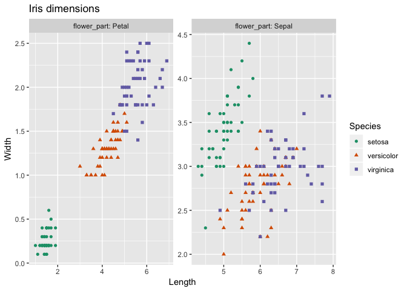
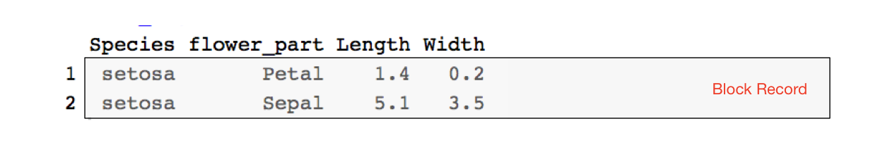
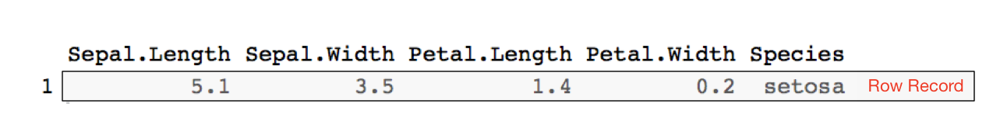
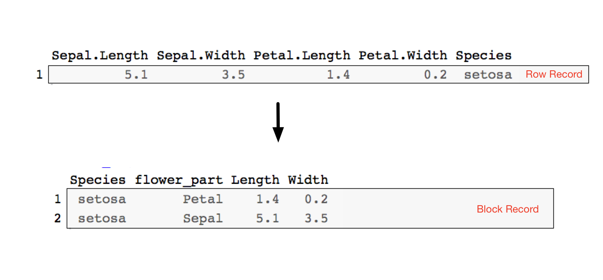
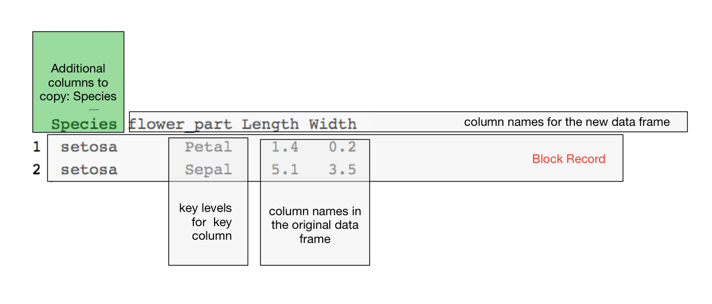
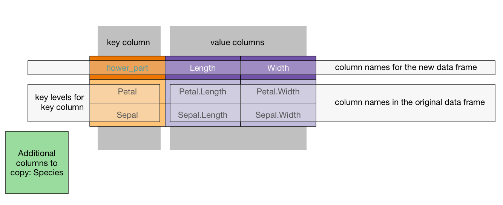

cdata is a general data re-shaper that has the great virtue of adhering to the so-called “Rule of Representation”:
Fold knowledge into data, so program logic can be stupid and robust.
The Art of Unix Programming, Erick S. Raymond, Addison-Wesley , 2003
The point being: it is much easier to reason about data than to try to reason about code, so using data to control your code is often a very good trade-off.
The question is then: how do you come up with the transform control table needed to use cdata to solve your problem?
Let’s discuss that with an example: “plotting the iris data faceted”.
To produce the following graph with ggplot2

One wants data that looks like the following:

Notice Species is in a column so we can use it to choose colors. Also, flower_part is in a column so we can use it to facet.
However, iris data starts in the following format.

So we want to transform one to the other before plotting.

This new block record is partially keyed by the flower_part column (which tells us which piece of a record a row corresponds to) and could be also per-record keyed by an iris_id (which we are not adding, as we do not need it for our graphing task, adding the per-record id makes the transform convertible and is shown here).
There are a great number of ways to achieve the above transform. We are going to concentrate on the cdata methodology.
Notice we are moving data from an “all of the record is in one row” to “the meaningful record unit is a block across several rows”. In cdata this means we want to perform a rowrecs_to_blocks() transform. To do this we start by labeling the roles of different portion of the block oriented data. In particular we identify:
Species, but often a per-record index or key).flower_part).data.frame, these are where values are in the block record data.We show this labeling below.

Notice we have marked the measurements 1.4, 0.2, 5.1, 3.5 as “column names”, not values. That is because we must show which columns these values are coming from.
This annotated example record is the guide for building what we call the transform control table. We build up the transform control table following these rules:
columnsToCopy argument.
The R version of the above is specified as follows:
(controlTable <- wrapr::qchar_frame(
flower_part, Length , Width |
Petal , Petal.Length, Petal.Width |
Sepal , Sepal.Length, Sepal.Width ))
#> flower_part Length Width
#> 1 Petal Petal.Length Petal.Width
#> 2 Sepal Sepal.Length Sepal.Width
(columnsToCopy <- "Species")
#> [1] "Species"And we can now perform the transform.
library("cdata")
iris_aug <- rowrecs_to_blocks(
iris,
controlTable = controlTable,
columnsToCopy = columnsToCopy)
head(iris_aug)
#> Species flower_part Length Width
#> 1 setosa Petal 1.4 0.2
#> 2 setosa Sepal 5.1 3.5
#> 3 setosa Petal 1.4 0.2
#> 4 setosa Sepal 4.9 3.0
#> 5 setosa Petal 1.3 0.2
#> 6 setosa Sepal 4.7 3.2The data is now ready to plot using ggplot2 as was shown here.
Designing a blocks_to_rowrecs transform is even easier, as the controlTable has the same shape as the incoming record block (assuming the record partial key controlling column is the first column). All one has to do is replace the value in such an example record with the desired column names.
For example:
# grab a record to use to build our control table
ct <- iris_aug[1:2, c("flower_part", "Length", "Width")]
print(ct)
#> flower_part Length Width
#> 1 Petal 1.4 0.2
#> 2 Sepal 5.1 3.5
# replace values with desired column names
# as in this case the values are unique we can do
# this mechanically, normally we do this by hand
for(i in 1:nrow(ct)) {
for(j in 2:ncol(ct)) {
ct[i,j] <- colnames(iris)[which(iris[1,]==ct[i,j])]
}
}
print(ct)
#> flower_part Length Width
#> 1 Petal Petal.Length Petal.Width
#> 2 Sepal Sepal.Length Sepal.WidthThough to actually move back from block records to row records we would need additional keys showing which rows together form a record (which we demonstrate here).
Notice in both cases having examples of the before and after form of the transform is the guide to building the transform specification (the transform control table). In practice: we highly recommend looking at your data, writing down what one record on each side of the transform would look like, and then using that to fill out the control table on paper.
The exercise of examining designing a control table really opens your eye to how data is moving in such transforms and exposes a lot of structure of data transforms. For example:
tidyr gather() or spread().k rows then the rowrecs_to_blocks() direction could be implemented as k-1 rbind()s.Some discussion of the nature of block records and row records in cdata can be found here.
Some additional tutorials on cdata data transforms can are given below: